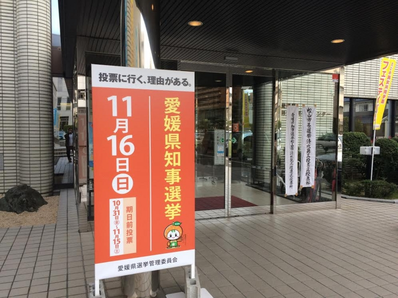

週末、選挙に行ってきた……（んだけど、また今度選挙なのか！
公開日：

ちょっと体調を崩していたのだけど、頑張って家から這い出て、愛媛県知事＆市長選挙に行ってきた。松山に引っ越して、初めての選挙。
再選を目指す中村氏は、加戸守行前知事による県政改革の発展的継承とともに、独自に取り組んだ県産品の販路拡大や観光振興など４年間の実績を強調。防災・減災強化や少子化対策を新たな公約の柱としている。
一方、小路氏は東京電力福島第１原発事故を踏まえ四国電力伊方原発は危険と指摘し、即時廃炉を主張。西条市と松山市に異論がある県営黒瀬ダムからの「分水」中止など、中村県政の転換を対立軸にする。消費税増税など自公政権への批判票の獲得も狙う。
まだこの街にきて右も左もわかってないけれど、大きな失政があったようには聞かないから、現職優位なんだろう。しいて言えば、小路氏が挙げる
- 伊方原発の即時廃炉
- 黒瀬ダムからの「分水」中止
が争点なのだろうけれど、自分なんかは産業を誘致するならむしろ原発を動かして（もしくは新しいのを作って）安定・安価な電気を約束するのは大事かなと思う。愛媛県は中央構造線が通っているので、地震の恐れはあるが、前の震災で明らかなように、原発で怖いのは地震よりむしろ津波だ。内海であれば津波の心配は少ない分、原発建設には優位なのではないか。しかし、四国の電気料金はすでに全国最低レベル（民間、かつ震災前統計だが）だそうで、産業が誘致できないのはほかの何かがボトルネックになっているのかもしれない。余った電気を中国・九州に売れるかどうかも自分は知らないし、正直、こういう問題は政治家より専門家に任せた方がよいようにも思う。
あと、分水問題も少し調べてみたけれど、分水が不要とする根拠の多くが“今の人口が増えないこと”が暗黙の前提になっているのがどうなのかな、と感じた。“愛媛県は節水ができてるから、分水が必要ない”とかね。要するに、いろいろ考えが後ろ向きで、なにかを発展させようとする意志は感じなかったかな。あと、原発は“万が一”のことばっかり考えるのに、水不足問題は“万が一なんて当分ないでしょ”みたいなノリなのはどうも納得がいかない。
２００５年の２市１町合併後、３回目の市長選。前回、中村時広前市長（現知事）の後継として初当選した野志氏が市政を継続するのか、自公政権とのパイプを前面に出す滝本氏、「国政にノーと言える県政、市政」を掲げる田中氏が担うのか注目される。推進・見直しで見解が割れる県営黒瀬ダム（西条市）からの松山分水問題や、地域経済振興といった争点をめぐり、３陣営は活発な論戦を繰り広げてきた。
市長選。こっちはもっとわからんかった。現職知事を支持するなら、現職市長も支持するのが道理なんだろうとは思う。別に「国政にノーと言え」なくてもいいしな。
そんなことより、ゴミの分別めんどくさいし、回収日も前に住んでたところより少ないので、割となんとかしてほしかった。あと、松山市は地味にボロい住宅が市内に多いね。空き家もあるし。こうした空家問題は全国的に今問題になっているけれど、観光を売りたいならなおのこと、いい感じに問題を昇華できんもんかなーと思う。キレイに再開発できないものか、できれば和風に統一して。
そうそう、松山は割と観光資源があるのに、街に美的統一感がなくてあまりよろしくないってのはすごく感じる。なんで道後温泉本館の前にパチンコ屋があるんだ。通りをちょっと離れたところに“道後ヘルスビル”があるみたいな冒険心掻き立てる雰囲気は嫌いじゃないのだけど、表通りにあるのはよくないな。
――と、そんなこと考えながら投票し、途中で買い物にスーパーへ寄ったのだけど、なんか悪寒がして倒れかけた。もう水曜日になるのに、いまだに体調も本調子じゃないし。やっぱり、期日前投票で“行けるときに行っとく”のが大事だと思った。
で、また、今度は国政選挙なの？ 正直いい加減にしてほしいけどな。入れる先ないし……。